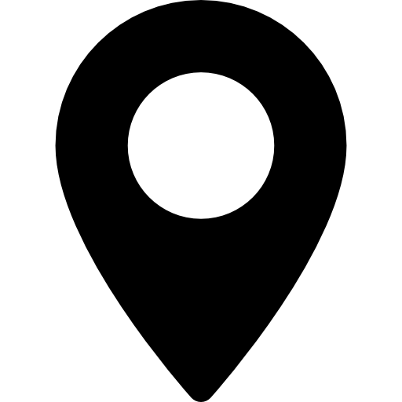

Portfolio
Profil

Savigny-sur-Orge (91600), France theo.manasselian.pro@gmail.com
theo.manasselian.pro@gmail.com
 linkedin.com/in/theo-manasselian
linkedin.com/in/theo-manasselian
 github.com/TheoManasselian
github.com/TheoManasselian
Théo Manasselian
Étudiant ESIEA · Ivry-sur-Seine
Actuellement en première année au programme Expert en Informatique à l'ESIEA (Ivry-sur-Seine), je me spécialise dans le domaine des réseaux et systèmes. Je m'appuie sur une base technique solide — Cisco Packet Tracer, Windows Server, virtualisation VMware / Proxmox, Active Directory, Linux — que je consolide au fil de ma formation (RNCP 7 prévu en 2030). Curieux et rigoureux, j'aime concevoir des infrastructures fiables, comprendre les systèmes en profondeur et explorer aussi le développement web, à travers mes projets personnels et scolaires. Au-delà de la technique, j'apporte une forte motivation pour apprendre, monter en compétences et m'investir pleinement dans les missions d'un projet.
Formation
Programme Expert en Informatique · Alternance
ESIEA — Ivry-sur-Seine · Sept. 2025 – Juil. 2030
Bac+5 RNCP 7 (prévu 2030) · Bac+3 RNCP 6 (prévu 2028) · Bac+2 RNCP 5 (prévu 2027)
Certification TOEIC — Anglais B2, Score : 840/990
ESIEA — Ivry-sur-Seine · 2026
Certification Cambridge — Anglais B1
LPO Monges — Savigny-sur-Orge · 2025
Langues